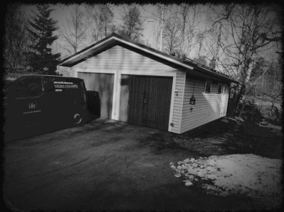

Juhan autotalli – enemmän kuin pelkkä talli
Kaiken alku
Wanha Autotalli rakentui muinaisina vuosina, vuonna 2015 ja siitä eteenpäin Juha on siellä puuhaillut enemmän tai vähemmän
Kesti pitkään että autotalli valmistui kokonaan, mutta Juha ei luovuttanut.
Hän halusi valmiin autotallin ja oli todella intohimoinen siitä.
Lopulta autotalli kuitenkin valmistui, ja siitä eteenpäin loppu onkin historiaa...